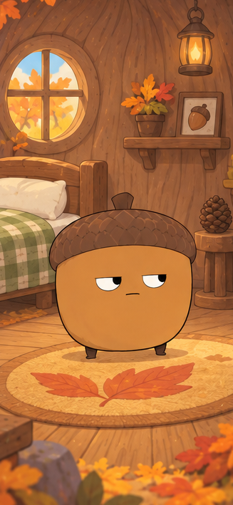
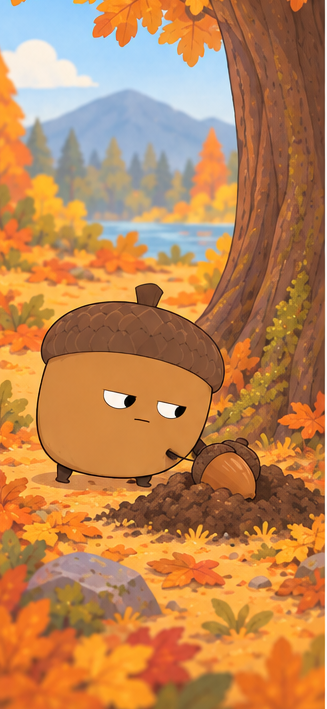

少なく数えられます
写真を少し明るくして、どんぐり同士が重ならないように撮ってみてください。
サポートの案内
ページを下へ進むたび、案内役のどんぐりが次の場所へ移動します。
森の入口
どんぐりを撮影枠に入れて、シャッターを押します。認識結果を確認してから、あずけます。

よくあるつまずき
写真を少し明るくして、どんぐり同士が重ならないように撮ってみてください。
少し離して、見える面が増えるように撮ってみてください。
キャンセルすると、認識数は記録に加算されず、一時画像も破棄されます。
確認が終わると一時画像は破棄されます。写真アルバムには保存しません。
次にできること
探索を続けて、もう一枚撮影します。
貯めたどんぐりを、森の仲間に一個ずつ。
拾ったどんぐりを、元の場所へ戻します。
迷ったら、
いつでも入口へ。

公園を出る前に
拾ったどんぐりは、元の場所の近くへ戻してあげましょう。森のなかまのごはんになります。
見つけた数やマスターどんぐりの数は減りません。見つけた記録として残ります。